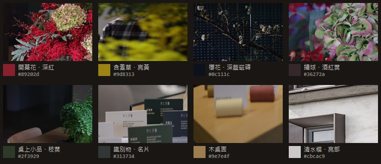

主案：底色＝品牌灰綠紙 #ecede7
清水模的明度，配上官方色票裡那個灰綠 #A1A398 的色偏。不是白、也不是純灰，是一張很淡的紙。

小時候被大人牽著來
現在牽著別人
從中華路到永樂街 四十多年
牙齒的事，慢慢講給你聽看牙不必等到痛。這裡放的是我們平常在診間裡會多說的那幾句。
- 1983開業至今
- 9位醫師駐診
- 6個部定專科
治療項目
- 一般牙科・定期檢查
- 牙周治療
- 兒童牙科
- 齒顎矯正
- 植牙・假牙重建


- 夜
- 地板
- 紙
- 墨
- 磚紅
- 藍灰
- 深綠松
取色來源換成桌面 02-Final：開幕茶會約 290 張手機紀錄、專業攝影原檔，以及 Logo顏色.pptx。
Logo顏色.pptx 裡就是八個色。我把它們跟診所裡實際量到的東西比對，色相幾乎完全對得上——家具、磁磚、開幕花藝，都是照這套色票挑的。所以網站不需要再發明配色，把這套拿來用就好。
| 診所裡量到的 | 實測色 | 官方色票 | 色相差 |
|---|---|---|---|
| 診療椅 | #4f6361 | 深綠松 | ΔH=1 |
| 候診沙發布料 | #4e718b | 藍灰 | ΔH=3 |
| 開幕花・深紅 | #89202d | 磚紅 | ΔH=3 |
| 圓凳與木件 | #8d5e3a | 焦糖褐 | ΔH=5 |
| 磚紅長椅 | #7c3721 | 焦糖褐 | ΔH=6 |
| 單椅布料 | #8e7577 | Deep Taupe | ΔH=8 |
| 茶室深藍磁磚 | #1d273d | 藍灰 | ΔH=18 |

你說花很顯眼，但用大量綠色和枝條讓每種花「各自是一片風景」，不互相吵。我把開幕花藝的照片整張跑主色，這件事是量得出來的：
| 照片 | 花的顏色 | 花佔畫面 | 其餘 |
|---|---|---|---|
| 門口紅花籃 | #89202d | 13.0% | 灰、黑、白 |
| 門口紅花籃（另一張） | #731923 | 11.2% | 灰、木、白 |
| 含羞草 | #9d8313 | 13.7% | 灰牆、深色 |
| 繡球 | #6c1226 | 21.5% | 灰、深綠 |
| 茶席櫻花 | #a0a8b0 | 1.1% | 深藍磁磚 78% |
花本身只佔畫面的 1～22%。所以版面規則就照這個定：
綠是枝條，可以重複出現（深綠松、苔綠——「現在看診中」的燈點、分類標籤）。花一種只出現一次（磚紅、Deep Taupe、藍灰），而且彼此隔開，中間全是紙的顏色。整頁看下來，任何一個手機屏幕上最多只會同時看到兩個彩色。
照你說的，暗色不再延伸到內文。中間那條 3px 的木色線就是分界——對應診所裡唯一有溫度的東西是地板。它不是裝飾線，是你走進門踩到的那個平面：線以上是站在街上看夜裡亮著燈的診所，線以下就是室內。
清水模的明度，配上官方色票裡那個灰綠 #A1A398 的色偏。不是白、也不是純灰，是一張很淡的紙。
小時候被大人牽著來
現在牽著別人
從中華路到永樂街 四十多年
牙齒的事，慢慢講給你聽看牙不必等到痛。這裡放的是我們平常在診間裡會多說的那幾句。
治療項目
三個都不是白。可讀性上完全等價（同一組文字的對比度差距在 0.05:1 以內），所以純粹是氣質的選擇。
牙齒的事，慢慢講給你聽
看牙不必等到痛。這裡放的是我們平常在診間裡會多說的那幾句。
兒童牙科① 清水模灰#edeceb・最中性
牙齒的事，慢慢講給你聽
看牙不必等到痛。這裡放的是我們平常在診間裡會多說的那幾句。
兒童牙科② 帆布米#f1ece5・最暖
牙齒的事，慢慢講給你聽
看牙不必等到痛。這裡放的是我們平常在診間裡會多說的那幾句。
兒童牙科③ 品牌灰綠#ecede7・主案
| 底色 | 色 | 彩度 | R−B | 依據 |
|---|---|---|---|---|
| ① 清水模灰 | #edeceb | 5.3% | +2 | 外牆亮部實測 #cbcac9（彩度 1.9%） |
| ② 帆布米 | #f1ece5 | 30% | +12 | 識別帆布袋實測 #d1c7bc |
| ③ 品牌灰綠 | #ecede7 | 14.3% | +5 | 清水模的明度 ＋ 官方灰綠 #A1A398 的色偏 |
（彩度數字在明度 92% 這一帶會被放大，看 R−B 比較準：② 是明顯的暖米，③ 微微偏綠，① 幾乎中性。）
官方色票直接當文字，壓在紙與卡片上：
| 色票 | 紙 #ecede7 | 卡 #f6f7f2 | 能當 |
|---|---|---|---|
| 深綠松 #214D48 | 8.03:1 | 8.79:1 | 內文、標籤、標題 |
| 藍灰 #3C596B | 6.29:1 | 6.88:1 | 內文、標籤、標題 |
| 灰紫 #5F5D66 | 5.50:1 | 6.01:1 | 內文、標籤、標題 |
| Deep Taupe #7D5A58 | 5.13:1 | 5.61:1 | 內文、標籤、標題 |
| 苔綠 #5D6D55 | 4.71:1 | 5.15:1 | 內文、標籤、標題 |
| 磚紅 #AF4C52 | 4.48:1 | 4.90:1 | 只能大字（標語、標題） |
| 焦糖褐 #9B735E | 3.56:1 | 3.90:1 | 只能大字 |
| 灰綠 #A1A398 | 2.17:1 | 2.38:1 | 不能當文字，只作底或色塊 |
| 墨 #2a2c27 | 11.99:1 | 13.11:1 | 主文字 |
| 墨淡 #5c5f57 | 5.52:1 | 6.04:1 | 次要文字 |
所以主案裡：標語用磚紅（1.22rem 粗體，屬大字）、分類標籤用深綠松／藍灰／Deep Taupe（小字，都在 5:1 以上）、電話用藍灰、看診中的燈點用深綠松。焦糖褐與灰綠這一版沒用上——量出來它們在淺底上撐不住文字，硬用只會犧牲可讀性。
暗夜 HERO 區沿用上一版驗證過的灰階（底 #191614、字 #e3e1e0），390px 無水平捲動。正式首頁完全沒動。
桌機版排法；文章內頁；HERO 疊字在淺色版下的第二種寫法；要不要做亮／暗自動切換。
照片為芳仁牙醫診所自有（取自 02-Final）。